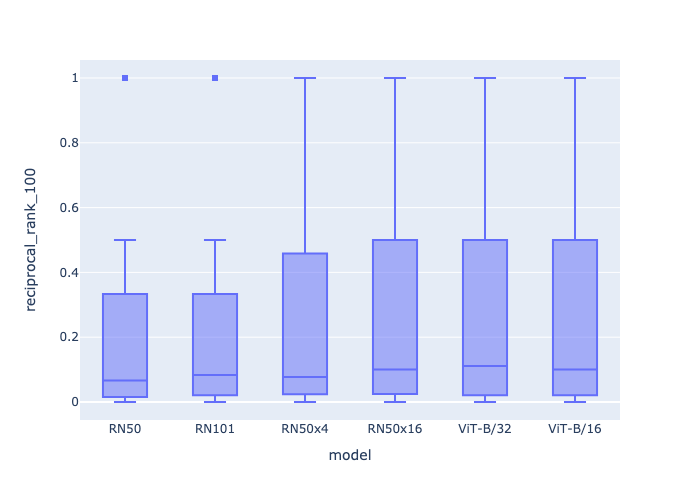

from vespa.package import ApplicationPackage
app_package = ApplicationPackage(name="imagesearch")Image search
This notebook walks through the pyvespa code used to create the text to image search sample application.
ToDo: This notebook is still work in progress and cannot yet be auto-run

Create the application package
Create an application package:
Add a field to hold the name of the image file. This is used in the sample app to load the final images that should be displayed to the end user.
The summary indexing ensures this field is returned as part of the query response. The attribute indexing store the fields in memory as an attribute for sorting, querying, and grouping:
from vespa.package import Field
app_package.schema.add_fields(
Field(name="image_file_name", type="string", indexing=["summary", "attribute"]),
)Add a field to hold an image embedding. The embeddings are usually generated by a ML model. We can add multiple embedding fields to our application. This is useful when making experiments. For example, the sample app adds 6 image embeddings, one for each of the six pre-trained CLIP models available at the time.
In the example below, the embedding vector has size 512 and is of type float. The index is required to enable approximate matching and the HNSW instance configure the HNSW index:
from vespa.package import HNSW
app_package.schema.add_fields(
Field(
name="embedding_image",
type="tensor<float>(x[512])",
indexing=["attribute", "index"],
ann=HNSW(
distance_metric="angular",
max_links_per_node=16,
neighbors_to_explore_at_insert=500,
),
)
)Add a rank profile that ranks the images by how close the image embedding vector is from the query embedding vector. The tensors used in queries must have their type declared in the application package, the code below declares the text embedding that will be sent in the query - it has the same size and type of the image embedding:
from vespa.package import RankProfile
app_package.schema.add_rank_profile(
RankProfile(
name="embedding_similarity",
inherits="default",
first_phase="closeness(embedding_image)",
inputs=[("query(embedding_text)", "tensor<float>(x[512])")],
)
)Deploy the application
The application package created above can be deployed using Docker or Vespa Cloud. Follow the instructions based on the desired deployment mode. Either option will create a Vespa connection instance that can be stored in a variable that will be denoted here as app.
We can then use app to interact with the deployed application:
import os
from vespa.deployment import VespaDocker
vespa_docker = VespaDocker(
port=8080
)
app = vespa_docker.deploy(application_package = app_package)Waiting for configuration server, 0/300 seconds...
Waiting for configuration server, 5/300 seconds...
Waiting for application status, 0/300 seconds...
Waiting for application status, 5/300 seconds...
Waiting for application status, 10/300 seconds...
Waiting for application status, 15/300 seconds...
Waiting for application status, 20/300 seconds...
Waiting for application status, 25/300 seconds...
Finished deployment.Feed the image data
ToDo: Add code below to create the feed and set batch - until then, disabled auto testing.
To feed the image data:
responses = app.feed_batch(batch)where batch is a list of dictionaries like the one below:
{
"id": "dog1",
"fields": {
"image_file_name": "dog1.jpg",
"embedding_image": {"values": [0.884, -0.345, ..., 0.326]},
}
}One of the advantages of having a python API is that it can integrate with commonly used ML frameworks. The sample application show how to create a PyTorch DataLoader to generate batches of image data by using CLIP models to generate image embeddings.
Query the application
The following query will use approximate nearest neighbor search to match the closest images to the query text and rank the images according to their distance to the query text. The sample application used CLIP models to generate image and query embeddings.
response = app.query(body={
"yql": 'select * from sources * where ({targetHits:100}nearestNeighbor(embedding_image,embedding_text));',
"hits": 100,
"input.query(embedding_text)": [0.632, -0.987, ..., 0.534],
"ranking.profile": "embedding_similarity"
})Evaluate different query models
Define metrics to evaluate:
from learntorank.evaluation import MatchRatio, Recall, ReciprocalRank
eval_metrics = [
MatchRatio(),
Recall(at=100),
ReciprocalRank(at=100)
]The sample application illustrates how to evaluate different CLIP models through the evaluate method:
result = app.evaluate(
labeled_data=labeled_data, # Labeled data to define which images should be returned to a given query
eval_metrics=eval_metrics, # Metrics used
query_model=query_models, # Each query model uses a different CLIP model version
id_field="image_file_name", # The name of the id field used by the labeled data to identify the image
per_query=True # Return results per query rather the aggragated.
)The figure below is the reciprocal rank at 100 computed based on the output of the evaluate method.
